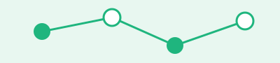
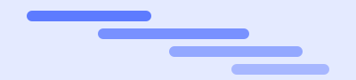
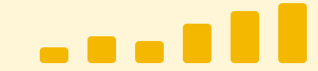
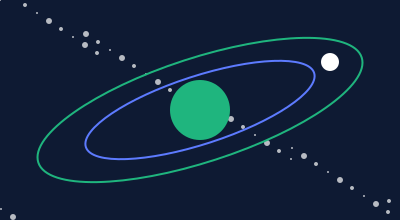
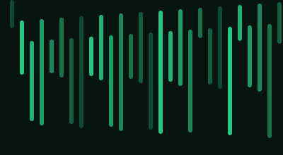
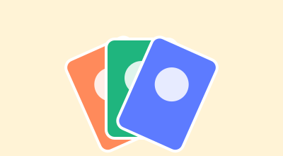
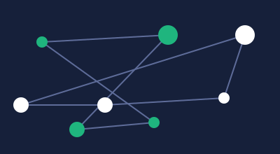
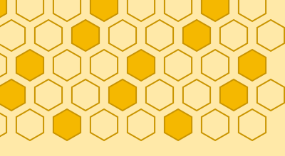
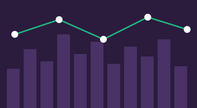

Cuenta historias en varios medios y llévalas a producción
Diseño de Proyectos Multimedia: narrativa transmedia, marketing digital y producción para crear un proyecto dirigido a la comunidad bonaventuriana.

Programa
Clases de las 16 semanas
Cada clase tiene su propia página con el tema, la explicación y la actividad de la semana.
Primer corte · Preproducción
Diseñar antes de producir. Entregable: Dossier de preproducción del proyecto

Semana 1PreproducciónIntroducción al proyecto
Ciclo de producción multimedia y presentación del proyecto.
Ver claseSemana 2PreproducciónTransmedia y crossmedia
Diferencias entre transmedia, crossmedia y adaptación.
Ver claseSemana 3PreproducciónUniverso narrativo y expansión
Storytelling, construcción de mundo y principios de Jenkins.
Ver claseSemana 4PreproducciónExperiencia, audiencia y plataformas
Público, user journey y función de cada plataforma.
Ver claseSemana 5PreproducciónEstrategia de comunicación
Marketing digital y diseño de un ARG.
Ver claseSemana 6PreproducciónRecursos, roles y planificación
Presupuesto, equipo, cronograma y rol del productor.
Ver claseSemana 7EntregaPrimera entrega
Dossier de preproducción del proyecto.
Ver claseSegundo corte · Producción
Construir y documentar. Entregable: Prototipo funcional o piezas producidas, con documentación

Semana 8ProducciónOrganización de la producción
Pipeline y metodologías ágiles y tradicionales.
Ver claseSemana 9ProducciónDesarrollo de contenidos
Producción de las primeras piezas multimedia.
Ver claseSemana 10ProducciónIntegración de medios
Conexión entre piezas y plataformas.
Ver claseSemana 11ProducciónDocumentación
Documentación técnica y creativa, Production Bible.
Ver claseSemana 12ProducciónPruebas y control de calidad
Pruebas con público real y ajustes.
Ver claseSemana 13EntregaSegunda entrega
Prototipo funcional con documentación.
Ver claseTercer corte · Publicación y métricas
Publicar, medir y optimizar. Entregable: Proyecto publicado, informe de métricas y evaluación de resultados

Semana 14Publicación y métricasPublicación y lanzamiento
Distribución, calendario editorial y campaña de lanzamiento.
Ver claseSemana 15Publicación y métricasAnalítica y experiencia de usuario
KPIs, herramientas de analítica y optimización.
Ver claseSemana 16EntregaTercera entrega
Proyecto publicado, métricas y resultados.
Ver claseReferencias
Proyectos de referencia
Casos transmedia para analizar durante el curso y tomar ideas para tu propio proyecto.

Star Wars
Película, cómics, series animadas, videojuegos y parques. El caso del programa: cada medio cuenta una parte distinta del universo.

The Matrix
Tres películas, cortos animados y un videojuego que contiene hechos necesarios para entender la trama. Ejemplo de continuidad entre medios.

Pokémon
Videojuegos, cartas, serie y películas que se alimentan entre sí. Ejemplo de coleccionismo y de extraibilidad.

The Beast
ARG creado para promocionar la película A.I. Una red de sitios web y pistas que los jugadores resolvieron en comunidad.

I Love Bees
ARG de la campaña de Halo 2 que usó teléfonos públicos reales. Ejemplo de participación del público.

Marvel Cinematic Universe
Películas, series y cómics en un mismo universo con continuidad. Ejemplo de serialidad y construcción de mundo.
Lecturas
Bibliografía
Textos básicos y complementarios del programa analítico.
- Convergence Culture, Henry Jenkins.
- Textual Poachers, Henry Jenkins, Mizuko Ito y danah boyd.
- Fantastic Transmedia: Narrative, Play and Memory Across Science Fiction and Fantasy Storyworlds, Colin Harvey.
- Estrategia de Marketing Online: cómo conseguir los mejores resultados en tus campañas de marketing, José Vergara.
- Diseño de imagen digital con software libre, Ramírez Martinell et al.
- Producción de audio con software libre, Ramírez Martinell et al.
- Producción de video con software libre, Ramírez Martinell et al.
- Métodos ágiles: alternativa a los métodos tradicionales de desarrollo, Sebastián Priolo.
- Cartoon Animation, Preston Blair.
- The Animator's Survival Kit, Richard Williams.
- Learning Three.js: The JavaScript 3D Library for WebGL, Jos Dirksen.
Complementaria sugerida, por confirmar con el docente
- Spreadable Media, Henry Jenkins, Sam Ford y Joshua Green.
- The Design of Everyday Things, Don Norman.
- Don't Make Me Think, Steve Krug.
- La Guía de Scrum, Ken Schwaber y Jeff Sutherland.
- Web Analytics 2.0, Avinash Kaushik.
- Getting Started in Transmedia Storytelling, Robert Pratten.